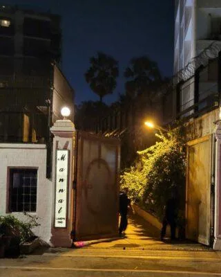

The Final Thesis · section 34 of 92
CHAPTER 5 — 4 OCTOBER 2021: THE STRAW THAT BROKE THE CAMEL'S BACK
The personal crisis inside the larger story



6
On 3 October 2021, Aryan Khan was arrested following the Narcotics Control Bureau's cruise ship operation. On 4 October, he was remanded to custody.
The legal process continued. Aryan Khan was granted bail on 28 October and released on 30 October. The NCB's 2022 chargesheet did not name him as an accused.

Bollywood News - The Indian Express
+1
The legal history is important, but the purpose of this chapter is not to repeat the proceedings.
It is to explain why 4 October occupies a particular place in the narrative.
For Gupta, the silence outside Mannat that day became a defining image.
Not the crowds on Aryan's return.
Not the later celebration.
The silence.
And the question that followed:
Behind closed doors, everyone: “If not for Shah Rukh Khan, then for whom will the largest democracy of the world stand behind?”
India's independence movement demonstrated the power of collective non-cooperation, mass participation and ordinary people standing together against an established order.
The comparison is not that a modern criminal investigation is equivalent to colonial rule. It is that a nation with a history of collective resistance must still confront the question of what solidarity means when a public figure and his family face an extraordinary ordeal.
In Gupta's account, the absence of a visible collective stand outside Mannat on 4 October was the moment the contradiction became impossible to ignore.
Millions had participated in the commercial and cultural success of Shah Rukh Khan.
But how many were prepared to stand silently for fairness and dignity when the star's family was at the centre of a national controversy?
Contemporaneous reporting documented some fan support in the days that followed, and later crowds celebrated Aryan Khan's return. Those events must not be conflated with the specific date and recollection at the heart of this chapter.
Bollywood
+1
The claim here is not that nobody ever supported Khan.
It is that the scale and nature of the public response, as Gupta remembers it on 4 October, raised a question about the difference between consuming a star's success and standing with a human being during a crisis.
That is where the personal story meets the digital-marketing thesis.
A fan community can be enormous in numbers yet still lack the organisational structure to act collectively beyond a campaign.
A campaign can mobilise millions to move a virtual train, unlock a trailer or promote a film, without creating a durable civic or cultural infrastructure through which those fans can coordinate around anything else.
The distinction is profound.
The machinery that can mobilise attention is not automatically the machinery that can mobilise solidarity.
The 2021 episode did not prove that every fan abandoned Khan. Nor does public evidence establish that the experience caused his subsequent professional or marketing decisions.
But as the straw that broke the camel's back in this narrative, it gives the digital history a new dimension.
The question is no longer merely why the technology ecosystem was not sustained.
It is whether the relationship between a superstar and his audience had become so commercially powerful, yet so structurally limited, that it could not produce the collective solidarity Gupta expected.
And whether the next phase of Khan's career would change the terms of that relationship.